Tema 9: Excepcions i interrupcions
9.1 Introducció
9.1.1 Necessitat
Durant l’execució normal d’un programa, el processador segueix un flux d’instruccions determinat per les instruccions de salt explícites (beq, jal, etc.). Les excepcions i les interrupcions són un mecanisme que permet alterar aquest flux de manera imprevista, sense que cap instrucció de salt ho hagi causat. La necessitat d’aquest mecanisme sorgeix de dues fonts ben diferenciades.
D’una banda, durant l’execució d’una instrucció poden aparèixer condicions errònies o especials que el processador no pot resoldre per si sol: un accés a una adreça de memòria no alineada o una instrucció amb un codi d’operació inexistent. En tots aquests casos, cal interrompre el programa i transferir el control a un codi del sistema operatiu (SO) que en faci el tractament adequat.
De l’altra, els dispositius d’entrada/sortida (E/S) necessiten notificar al processador que han completat una operació o que requereixen atenció, perquè esperar activament que el dispositiu acabi (consultant-ne l’estat repetidament, polling) desaprofita el processador. La solució és que el dispositiu, quan estigui llest, avisi el processador, i que el processador pugui interrompre temporalment el programa en execució per atendre’l.
En tots dos casos, el mecanisme és el mateix: el processador interromp l’execució del programa, transfereix el control a una rutina de servei d’excepcions (RSE) del SO, i un cop feta la gestió, pot reprendre el programa interromput.
- Excepció: esdeveniment causat per l’execució d’una instrucció (intern al processador).
- Interrupció: esdeveniment causat per un dispositiu extern.
Tots dos usen el mateix mecanisme de maquinari, però difereixen en l’origen, el moment de detecció i, sovint, en el tractament.
9.1.2 Tipologia
La taula següent classifica els principals tipus d’excepcions i interrupcions, indicant-ne l’origen, el moment en què el processador les detecta i l’acció que pren en acabar la RSE.
| Tipus | Causa | Detecció | Acció en acabar la RSE | Excep. / Inter. |
|---|---|---|---|---|
| Accés no alineat | Adreça no múltiple de la mida de dada | Durant la instrucció | Avorta1 | Excepció |
| Instrucció il·legal | Codi d’operació inexistent | Durant la instrucció | Avorta1 | Excepció |
| Fallada de pàgina | Pàgina absent de la memòria física | Durant la instrucció | Reexecuta la instrucció causant | Excepció |
Crida al sistema (ecall) |
Instrucció ecall explícita |
Durant la instrucció | Continua a instrucció+4 | Excepció |
| Interrupció d’E/S | Senyal extern d’un dispositiu | En acabar la instrucció en curs | Continua a la instrucció següent | Interrupció |
1 En el cas general, la RSE avorta el programa i emet un missatge d’error. Tècnicament, una RSE suficientment sofisticada podria recuperar-se d’algunes d’aquestes situacions, però això queda fora de l’abast d’EC.
Cal destacar dues diferències clau entre excepcions i interrupcions que la taula reflecteix:
- Moment de detecció:
- Les excepcions es detecten durant l’execució de la instrucció causant, que s’avorta sense escriure cap resultat ni incrementar el PC.
- Les interrupcions es detecten en acabar la instrucció en curs, quan el PC ja s’ha incrementat.
- Acció en acabar la RSE:
- En les excepcions que:
- es poden resoldre (fallada de pàgina): cal reexecutar la instrucció causant.
- no alteren l’estat del programa (crida al sistema): cal continuar a la instrucció següent.
- són irrecuperables: el programa s’avorta.
- En les interrupcions, el programa sempre es reprèn a la instrucció següent.
- En les excepcions que:
9.2 Suport de maquinari: registres de control i estat
9.2.1 El model de privilegis de RISC-V
RISC-V defineix tres modes de privilegi, que determinen quines instruccions pot executar el processador i a quines adreces de memòria pot accedir.
| Mode | Privilegi | Nom | Ús habitual | Obligatori |
|---|---|---|---|---|
| M | Màxim | Machine (màquina) | Firmware, arrencada, gestió d’excepcions de baix nivell | Sí |
| S | Mitja | Supervisor | Sistema operatiu (Linux, etc.) | No |
| U | Mínim | User (usuari) | Programes d’usuari | No |
A EC s’estudia el mecanisme d’excepcions en mode M, que és el més directe i el que implementen tots els processadors RISC-V. El mode S s’introdueix a Secció 9.2.8 i s’aplica al tractament de fallades de pàgina a Secció 9.7.3.
El mode en què opera el processador en cada moment es controla mitjançant uns registres especials anomenats registres de control i estat (Control and Status Registers, CSR). A aquests registres només s’hi pot accedir amb instruccions específiques.
L’extensió Zicsr de RISC-V defineix les instruccions d’accés als CSR. Encara que en versions antigues de l’especificació aquestes instruccions formaven part de la ISA base, a partir de la versió 2.2 es van segregar en una extensió independent per permetre implementacions minimalistes sense suport CSR. En la pràctica, qualsevol processador RISC-V que implementi el mecanisme d’excepcions i interrupcions requereix Zicsr.
| Mnemònic | Operands | Operació | Nom | Tipus |
|---|---|---|---|---|
csrr |
rd, csr |
\(rd \leftarrow csr\) | CSR read (pseudoinstrucció) | I |
csrw |
csr, rs1 |
\(csr \leftarrow rs1\) | CSR write (pseudoinstrucció) | I |
csrrw |
rd, csr, rs1 |
\(rd \leftarrow csr; \ csr \leftarrow rs1\) | CSR read/write | I |
csrrs |
rd, csr, rs1 |
\(rd \leftarrow csr; \ csr \leftarrow csr \text{ or } rs1\) | CSR read and set bits | I |
csrrc |
rd, csr, rs1 |
\(rd \leftarrow csr; \ csr \leftarrow csr \text{ and not } rs1\) | CSR read and clear bits | I |
Les pseudoinstruccions csrr i csrw són les formes habituals per llegir i escriure un CSR sense modificar-ne l’altre operand. Les instruccions csrrs i csrrc permeten activar o desactivar bits individuals sense alterar la resta.
Les instruccions d’accés als CSR són privilegiades: en mode U, intentar executar-les genera una excepció d’instrucció il·legal.
Les instruccions csrrwi, csrrsi i csrrci operen igual que csrrw, csrrs i csrrc respectivament, però accepten un immediat de 5 bits sense signe (uimm5) en lloc del registre rs1. Són útils per activar o desactivar bits individuals d’un CSR sense necessitat de carregar un valor en un registre prèviament.
| Mnemònic | Operands | Operació | Nom | Tipus |
|---|---|---|---|---|
csrrwi |
rd, csr, uimm5 |
\(rd \leftarrow csr; \ csr \leftarrow uimm5\) | CSR read/write immediate | I |
csrrsi |
rd, csr, uimm5 |
\(rd \leftarrow csr; \ csr \leftarrow csr \text{ or } uimm5\) | CSR read and set bits immediate | I |
csrrci |
rd, csr, uimm5 |
\(rd \leftarrow csr; \ csr \leftarrow csr \text{ and not } uimm5\) | CSR read and clear bits immediate | I |
9.2.2 mcause — Codi de causa
Quan es produeix una excepció o interrupció, el maquinari escriu automàticament al registre mcause un codi que n’identifica la causa. El bit de més pes (bit 31) indica si l’origen és una interrupció (bit 31 = 1) o una excepció (bit 31 = 0). Els 31 bits restants contenen el codi de causa.
mcause — Valors més rellevants
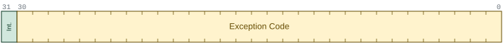
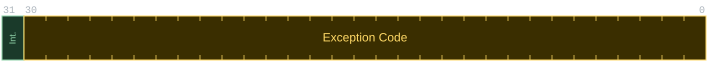
mcause (Int. = Interrupt).
| Bit 31 | Codi | Causa |
|---|---|---|
| 0 | 0 | Instrucció mal alineada |
| 0 | 1 | Error d’accés a instrucció |
| 0 | 2 | Instrucció il·legal |
| 0 | 3 | Punt de parada (ebreak) |
| 0 | 4 | Lectura de dada mal alineada |
| 0 | 5 | Error d’accés en lectura de dada |
| 0 | 6 | Escriptura de dada mal alineada |
| 0 | 7 | Error d’accés en escriptura de dada |
| 0 | 8 | Crida al sistema des de mode U (ecall) |
| 0 | 9 | Crida al sistema des de mode S (ecall) |
| 0 | 11 | Crida al sistema des de mode M (ecall) |
| 0 | 12 | Fallada de pàgina en cerca d’instrucció |
| 0 | 13 | Fallada de pàgina en lectura |
| 0 | 15 | Fallada de pàgina en escriptura/AMO |
| 1 | 3 | Interrupció de programari en mode M |
| 1 | 7 | Interrupció de temporitzador en mode M |
| 1 | 11 | Interrupció externa (E/S) en mode M |
9.2.3 mepc — Adreça de retorn
El registre mepc (Machine Exception Program Counter) guarda l’adreça on la RSE ha de retornar el control en acabar: la de la instrucció causant o la de la següent, segons el tipus d’esdeveniment.
El valor que el maquinari hi escriu depèn del tipus d’esdeveniment.
- Excepció:
mepcapunta a la instrucció causant (la que s’ha interromput sense finalitzar). En casos on es vol continuar a la instrucció següent (per exemple,ecall), la pròpia RSE incrementamepcen 4 abans de retornar. - Interrupció:
mepcapunta a la instrucció que hauria executat el processador a continuació (la instrucció causant ja ha finalitzat i el PC ja s’ha incrementat).
mepc
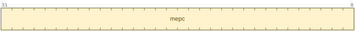
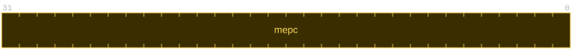
mepc.
9.2.4 mstatus — Estat global
El registre mstatus conté els bits d’estat global del processador. Per al mecanisme d’excepcions, els camps rellevants són:
mstatus
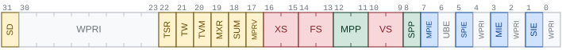
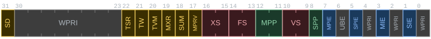
mstatus (RV32).
MIE(bit 3, Machine Interrupt Enable): permís global d’interrupcions. SiMIE=1, les interrupcions estan habilitades. SiMIE=0, totes les interrupcions queden inhibides. Les excepcions no es poden inhibir.MPIE(bit 7, Machine Previous Interrupt Enable): guarda el valor deMIEen el moment en què s’ha produït l’excepció o interrupció. Permet restaurar-lo en retornar.MPP(bits 12:11, Machine Previous Privilege): guarda el mode de privilegi anterior (M, S o U) per poder-lo restaurar en retornar ambmret.
9.2.5 mtvec — Vector d’excepcions
El registre mtvec (Machine Trap-Vector Base-Address Register) conté l’adreça on el processador salta quan es produeix una excepció o interrupció. Té dos camps:
mtvec
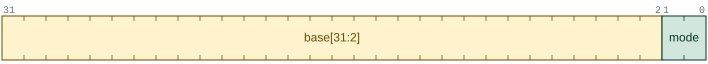
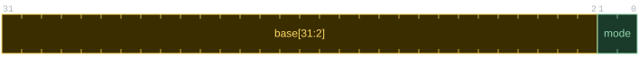
mtvec.
BASE(bits 31:2): adreça base de la rutina o taula de vectors, alineada a 4 bytes.MODE(bits 1:0): mode de funcionament.
RISC-V defineix dos modes:
MODE |
Nom | Comportament |
|---|---|---|
| 0 | Directe | Totes les excepcions i interrupcions salten a BASE |
| 1 | Vectoritzat | Les interrupcions salten a BASE + 4 × causa; les excepcions sempre a BASE |
En el mode directe, la RSE és responsable de llegir mcause i derivar el control a la rutina específica de cada causa. En el mode vectoritzat, el maquinari calcula directament l’adreça de la rutina per a cada tipus d’interrupció, cosa que estalvia el temps de llegir mcause i saltar a la rutina corresponent.
A EC s’usa sempre el mode directe (MODE=0): totes les excepcions i interrupcions salten a l’adreça BASE, i és la RSE qui consulta mcause per determinar-ne la causa.
9.2.6 mtval — Informació addicional de l’excepció
El registre mtval (Machine Trap Value) conté informació addicional sobre la causa de l’excepció, per ajudar la RSE en el tractament. El valor que hi escriu el maquinari depèn del tipus d’excepció:
- Accés no alineat o fallada de pàgina:
mtvalconté l’adreça virtual que ha causat l’excepció. - Instrucció il·legal:
mtvalconté la instrucció que ha causat l’excepció. - Interrupció o altres excepcions:
mtvals’escriu a zero.
9.2.7 mip / mie — Peticions i màscares d’interrupció
Els registres mip (Machine Interrupt Pending) i mie (Machine Interrupt Enable) gestionen les interrupcions bit a bit. Cada bit correspon a un tipus d’interrupció:
mip i mie
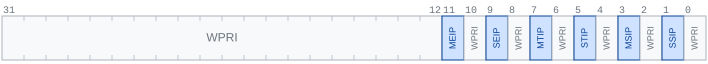
mip.
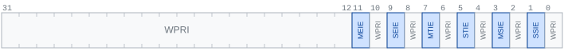
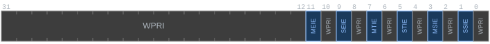
mie.
| Bit | Nom mip |
Nom mie |
Tipus d’interrupció |
|---|---|---|---|
| 11 | MEIP |
MEIE |
Externa (E/S) en mode M |
| 9 | SEIP |
SEIE |
Externa (E/S) en mode S |
| 7 | MTIP |
MTIE |
Temporitzador en mode M |
| 5 | STIP |
STIE |
Temporitzador en mode S |
| 3 | MSIP |
MSIE |
Programari en mode M |
| 1 | SSIP |
SSIE |
Programari en mode S |
mip: cada bit s’activa quan el dispositiu corresponent ha enviat una petició d’interrupció i la manté activa. Els bits de mode M (MEIP,MTIP,MSIP) són de sols lectura per al programari (els actualitza el maquinari).mie: cada bit és una màscara independent que habilita o deshabilita les interrupcions d’un tipus concret. És de lectura/escriptura.
Perquè una interrupció sigui atesa cal que es compleixin simultàniament tres condicions: MIE=1 (permís global), el bit corresponent de mie val 1 (permís específic) i el bit corresponent de mip val 1 (petició pendent).
mip i mie treballen conjuntament: mip indica quines peticions han arribat, i mie indica quines d’elles estan habilitades. El permís global MIE de mstatus les inhibeix totes alhora, independentment de mie.
9.2.8 Els registres equivalents en mode S
Per al mode S, RISC-V defineix un conjunt de registres CSR paral·lel al de mode M, amb la lletra inicial s en lloc de m. La funció de cada registre és anàloga:
| Registre mode M | Registre mode S | Funció |
|---|---|---|
mcause |
scause |
Codi de causa de l’excepció o interrupció |
mepc |
sepc |
Adreça de retorn |
mstatus |
sstatus |
Estat global (subconjunt dels bits de mstatus) |
mtvec |
stvec |
Adreça de la rutina de servei |
mip |
sip |
Peticions d’interrupció pendents |
mie |
sie |
Màscares d’interrupció |
Quan el processador opera en mode S (per exemple, executant el nucli de Linux), les excepcions i interrupcions delegades pel mode M es gestionen amb els registres s*. La delegació s’especifica als registres medeleg (excepcions) i mideleg (interrupcions), que el firmware configura durant l’arrencada. L’equivalent de mret en mode S és la instrucció sret, amb la mateixa semàntica sobre els camps S* de sstatus i sobre sepc.
9.3 Flux de maquinari en detectar una excepció o interrupció
9.3.1 Accions automàtiques del processador
Quan el processador detecta una excepció o una petició d’interrupció, executa automàticament, per maquinari, la seqüència d’accions següent:
Guardar el PC a
mepc: el processador escriu el valor actual del PC al registremepc, per poder reprendre el programa interromput en acabar la RSE.Escriure la causa a
mcause: s’escriu el codi de la causa (bit 31 + codi) al registremcause, per tal que la RSE pugui identificar l’origen de l’excepció o interrupció.Desar i desactivar el permís d’interrupcions: el valor de
MIEes copia aMPIE(per poder-lo restaurar més tard), iMIEes posa a 0. A partir d’aquest moment, totes les interrupcions queden inhibides mentre s’executa la RSE.Desar el mode de privilegi: el mode actual s’escriu a
MPPdemstatus, i el processador passa a mode M.Saltar a la RSE: el PC s’escriu amb l’adreça continguda a
mtvec(en mode directe,BASE; en mode vectoritzat,BASE + 4 × causaper a interrupcions).
Les accions 1–5 les executa el maquinari de forma atòmica, sense intervenció del programari. La RSE no comença a executar-se fins que totes s’han completat.
9.3.2 Diferències entre excepció i interrupció
Tot i que el flux de maquinari és el mateix, hi ha dues diferències importants segons el tipus d’esdeveniment:
- Moment de detecció:
- En una excepció, la instrucció causant s’avorta en mig de l’execució: no escriu cap resultat, no accedeix a memòria i el PC no s’incrementa. El valor guardat a
mepcés l’adreça d’aquesta instrucció (vegeu Secció 9.2.3). - En una interrupció, el processador no la comprova fins que la instrucció en curs ha finalitzat completament i el PC ja s’ha incrementat. El valor guardat a
mepcés l’adreça de la instrucció que hauria executat a continuació (vegeu Secció 9.2.3).
- En una excepció, la instrucció causant s’avorta en mig de l’execució: no escriu cap resultat, no accedeix a memòria i el PC no s’incrementa. El valor guardat a
- Escriptura a
mtval: en algunes excepcions, el maquinari escriu informació addicional al registremtvalper ajudar la RSE en el tractament (vegeu Secció 9.2.6). En les interrupcions,mtvals’escriu a zero.
En un processador amb pipeline, diverses instruccions s’executen simultàniament en etapes diferents. Quan es detecta una excepció, cal garantir que:
- La instrucció causant i totes les posteriors en el pipeline s’anul·len (flush), sense escriure cap resultat.
- Totes les instruccions anteriors a la causant en l’ordre del programa s’han completat.
Aquesta propietat s’anomena excepcions precises (precise exceptions) i és un requisit de l’arquitectura RISC-V. Garantir-la en pipelines profunds és un dels reptes de disseny més importants dels processadors moderns.
Les interrupcions, en canvi, es comproven sempre entre instruccions (mai a mig d’una), cosa que simplifica el tractament en el pipeline.
9.4 La rutina de servei d’excepcions
9.4.1 Responsabilitats
Un cop el maquinari ha completat les accions de Secció 9.3.1, el processador comença a executar la RSE. Aquesta rutina, que forma part del SO, té les responsabilitats següents, en ordre:
Salvar l’estat del programa interromput: la RSE ha de guardar en memòria tots els registres generals (
x1–x31), per poder-los restaurar en acabar. A diferència d’una subrutina normal, aquí no s’apliquen les regles de l’ABI sobre registres salvats i temporals: com que la RSE no ha estat invocada voluntàriament pel programa, cal salvar-los tots sense excepció.Identificar la causa: la RSE llegeix el registre
mcauseper determinar el tipus d’excepció o interrupció i saltar a la rutina específica (exception handler) corresponent.Tractar l’excepció o interrupció: el tractament depèn de la causa:
- Resoldre el problema i retornar (fallada de pàgina): la RSE resol la situació i el programa es reprèn reexecutant la instrucció causant.
- Continuar a la instrucció següent (crida al sistema, interrupció d’E/S): la RSE executa el servei sol·licitat i el programa es reprèn a la instrucció següent.
- Avortar el programa (accés no alineat, instrucció il·legal): la RSE emet un missatge d’error i cedeix el control a un altre procés.
Ajustar
mepcsi cal: en els casos on el programa ha de continuar a la instrucció següent a la causant (per exemple,ecall), la RSE incrementamepcen 4. En la resta de casos no cal cap ajust (vegeu Secció 9.4.3).Restaurar l’estat: la RSE restaura tots els registres salvats al pas 1.
Retornar al programa: la RSE executa la instrucció
mretper retornar al programa interromput (vegeu Secció 9.4.2).
A la RSE cal salvar tots els registres generals sense excepció, independentment de les convencions de l’ABI. El programa interromput no ha cedit el control voluntàriament i no pot saber quins registres ha modificat la RSE.
9.4.2 La instrucció mret
La instrucció mret (machine return) finalitza l’execució de la RSE i restaura l’estat del processador anterior a l’excepció o interrupció. Executa les accions següents, per maquinari:
- Restaurar el permís d’interrupcions: copia
MPIEaMIE, i posaMPIE=1. - Restaurar el mode de privilegi: copia
MPPal mode actiu, i posaMPP=U. - Saltar a l’adreça de retorn: copia
mepcal PC.
mret
| Mnemònic | Operands | Operació | Nom |
|---|---|---|---|
mret |
— | \(MIE \leftarrow MPIE; \ MPIE \leftarrow 1; \ mode \leftarrow MPP; \ MPP \leftarrow U; \ PC \leftarrow mepc\) | Machine return |
9.4.3 Ajust de mepc
En acabar el tractament, la RSE ha de decidir on reprèn el programa. La regla és:
- Reexecutar la instrucció causant (
mepcsense modificar): quan l’excepció s’ha produït perquè la instrucció no ha pogut completar-se però la situació ja s’ha resolt (fallada de pàgina). En acabarmret, el PC apuntarà a la mateixa instrucció, que ara s’executarà correctament. - Continuar a la instrucció següent (
mepc += 4): quan la instrucció causant ja ha complert la seva funció i no s’ha de tornar a executar. Els casos principals són:ecall: la crida al sistema ja ha estat atesa.ebreak: el punt de parada ja ha estat processat pel depurador.- En les interrupcions,
mepcja apunta a la instrucció següent (vegeu Secció 9.3.2), de manera que no cal cap ajust.
Si la RSE retornés sense ajustar mepc en el cas d’una ecall, el processador reexecutaria la mateixa instrucció ecall indefinidament. L’increment de mepc en 4 és responsabilitat de la RSE, no del maquinari.
9.4.4 Exemple: RSE mínima en RISC-V
El codi següent és un exemple il·lustratiu (no executable directament) d’una RSE mínima que salva tots els registres, identifica la causa i en delega el tractament a un dispatcher. Com que una RSE real no viu al segment .text habitual d’un programa d’usuari, l’exemple usa directives de GNU as (.section, .align) fora de l’abast de RARS:
RV32IZicsr
.section .text.trap, "ax"
.align 2
rse:
# Reservar espai a la pila per a 30 registres (30 × 4 = 120 bytes; s'ometen x0 i sp)
addi sp, sp, -120
# Salvar tots els registres generals (excepte x0, que és sempre 0)
sw ra, 0(sp)
sw t0, 4(sp)
sw t1, 8(sp)
sw t2, 12(sp)
sw s0, 16(sp)
sw s1, 20(sp)
sw a0, 24(sp)
sw a1, 28(sp)
sw a2, 32(sp)
sw a3, 36(sp)
sw a4, 40(sp)
sw a5, 44(sp)
sw a6, 48(sp)
sw a7, 52(sp)
sw s2, 56(sp)
sw s3, 60(sp)
sw s4, 64(sp)
sw s5, 68(sp)
sw s6, 72(sp)
sw s7, 76(sp)
sw s8, 80(sp)
sw s9, 84(sp)
sw s10, 88(sp)
sw s11, 92(sp)
sw t3, 96(sp)
sw t4, 100(sp)
sw t5, 104(sp)
sw t6, 108(sp)
# Salvar també gp i tp per completesa
sw gp, 112(sp)
sw tp, 116(sp)
# Llegir mcause i mepc i passar-los com a paràmetres al dispatcher
csrr a0, mcause # a0 = mcause (causa de l'excepció/interrupció)
csrr a1, mepc # a1 = mepc (adreça de retorn)
mv a2, sp # a2 = punter als registres salvats
# Cridar el dispatcher, que identificarà la causa i cridarà el handler
call handler_dispatcher # retorna a a0 l'adreça de retorn ajustada
# Actualitzar mepc amb l'adreça de retorn que ha decidit el dispatcher
csrw mepc, a0
# Restaurar tots els registres generals
lw ra, 0(sp)
lw t0, 4(sp)
lw t1, 8(sp)
lw t2, 12(sp)
lw s0, 16(sp)
lw s1, 20(sp)
lw a0, 24(sp)
lw a1, 28(sp)
lw a2, 32(sp)
lw a3, 36(sp)
lw a4, 40(sp)
lw a5, 44(sp)
lw a6, 48(sp)
lw a7, 52(sp)
lw s2, 56(sp)
lw s3, 60(sp)
lw s4, 64(sp)
lw s5, 68(sp)
lw s6, 72(sp)
lw s7, 76(sp)
lw s8, 80(sp)
lw s9, 84(sp)
lw s10, 88(sp)
lw s11, 92(sp)
lw t3, 96(sp)
lw t4, 100(sp)
lw t5, 104(sp)
lw t6, 108(sp)
lw gp, 112(sp)
lw tp, 116(sp)
# Alliberar la pila
addi sp, sp, 120
# Retornar al programa: MIE←MPIE, mode←MPP, PC←mepc
mretEl dispatcher (handler_dispatcher) rep la causa (mcause), l’adreça de retorn (mepc) i un punter als registres salvats. Aquest punter li permet llegir els paràmetres de la crida al sistema i modificar els valors que es restauraran; per exemple, escriure el resultat d’una crida a la posició salvada d’a0, que serà la que torni al programa en acabar la RSE. El dispatcher consulta mcause per cridar el handler específic i retorna l’adreça on ha de continuar el programa: mepc (per reexecutar la instrucció causant), mepc + 4 (per continuar a la instrucció següent) o una altra adreça (per exemple, en un canvi de context).
L’exemple usa la pila del programa interromput (sp). En un sistema real això és problemàtic: si el programa tenia sp corromput o apuntant a una adreça invàlida, la RSE fallaria immediatament. Els sistemes operatius reals usen una pila separada per al nucli, i el canvi de pila forma part de les accions inicials de la RSE, sovint amb l’ajut del registre mscratch, que el firmware inicialitza amb l’adreça de la pila del nucli.
9.5 Crida al sistema (ecall)
9.5.1 Protecció: mode U vs. mode M
El SO és un programa resident al computador que gestiona els recursos compartits: la memòria física, els dispositius d’E/S i l’ús del processador. Per garantir que cap programa d’usuari pugui accedir directament a aquests recursos i comprometre la seguretat o l’estabilitat del sistema, el codi del SO només s’executa en mode M (o mode S en sistemes amb Linux), mentre que els programes d’usuari s’executen en mode U.
Els privilegis del mode M permeten dues coses que el mode U no pot fer:
- Accedir a adreces de memòria reservades al SO: en mode U, un accés a aquestes adreces genera una excepció d’accés no permès.
- Executar instruccions privilegiades (com les instruccions CSR): en mode U, intentar-ho genera una excepció d’instrucció il·legal.
9.5.2 ecall com a porta d’entrada controlada al SO
Per tal que un programa d’usuari pugui sol·licitar un servei al SO, cal un mecanisme que permeti passar de mode U a mode M de forma controlada, sense concedir al programa accés il·limitat als privilegis del sistema. La solució és precisament el mecanisme d’excepcions: la instrucció ecall (environment call) causa una excepció que activa automàticament el mode M i salta a la RSE del SO.
ecall i ebreak
| Mnemònic | Operands | Operació | Nom |
|---|---|---|---|
ecall |
— | Causa excepció (crida al sistema) | Environment call |
ebreak |
— | Causa excepció (punt de parada) | Environment break |
Això garanteix que hi ha un únic punt d’entrada al SO (l’adreça de la RSE a mtvec) i que el programa d’usuari no pot triar on salta ni amb quins privilegis ho fa. En acabar el tractament, la RSE executa mret, que restaura el mode U i retorna el control al programa.
9.5.3 Convenció de crides al sistema a RARS
Els SOs estableixen una convenció de crides al sistema per passar el codi de servei, els paràmetres de les crides i els registres que cal emprar. Per exemple, RARS estableix el codi de servei al registre a7 i l’argument principal i el valor de retorn al registre a0. També estableix dos codis de servei per a sortir del programa, exit (codi de servei 10) i exit2 (codi de servei 93). La diferència és que exit2 permet especificar el codi de sortida (normalment 0 per a una terminació correcta), que es retorna al procés pare (normalment el SO).
a7: codi de servei.a0: argument principal i valor de retorn.
| Codi | Nom | Arguments | Retorn |
|---|---|---|---|
| 1 | print_int |
a0 = enter |
— |
| 2 | print_float |
fa0 = flotant |
— |
| 4 | print_string |
a0 = adreça string |
— |
| 5 | read_int |
— | a0 = enter |
| 6 | read_float |
— | fa0 = flotant |
| 8 | read_string |
a0 = buffer, a1 = longitud màxima |
— |
| 10 | exit |
— | — |
| 11 | print_char |
a0 = caràcter (ASCII) |
— |
| 12 | read_char |
— | a0 = caràcter (ASCII) |
| 34 | print_hex |
a0 = enter |
— |
| 35 | print_bin |
a0 = enter |
— |
| 36 | print_unsigned |
a0 = enter sense signe |
— |
| 93 | exit2 |
a0 = codi de sortida |
— |
Els exemples següents mostren les crides al sistema més habituals a RARS:
Imprimir un enter (codi 1):
Llegir un enter de l’entrada estàndard (codi 5):
Imprimir un string (codi 4):
Finalitzar el programa (codi 10):
9.5.4 Convenció ABI de Linux
Les crides al sistema segueixen una convenció estricta per passar el codi de servei i els paràmetres. A Linux/RISC-V:
a7: codi de la crida al sistema (syscall number).a0–a5: arguments (fins a sis).a0: valor de retorn (ia1per a resultats de 64 bits en RV32).
La convenció de crides al sistema no és la mateixa que la convenció de crida a subrutines de l’ABI. En particular, el codi de servei va a a7, no a a0, i hi pot haver fins a sis arguments en lloc de quatre.
Els exemples següents mostren les crides al sistema més habituals:
Escriure a la sortida estàndard (write, codi 64):
RV32I
Llegir de l’entrada estàndard (read, codi 63):
RV32I
Finalitzar el programa (exit, codi 93):
Reservar memòria dinàmica (brk, codi 214):
| Codi | Nom | Arguments | Retorn |
|---|---|---|---|
| 17 | getcwd |
a0=buf, a1=size |
a0=buf o error |
| 23 | dup |
a0=fd |
a0=nou fd o error |
| 25 | fcntl |
a0=fd, a1=cmd, a2=arg |
a0=resultat o error |
| 29 | ioctl |
a0=fd, a1=req, a2=arg |
a0=0 o error |
| 35 | unlinkat |
a0=dirfd, a1=path, a2=flags |
a0=0 o error |
| 48 | faccessat |
a0=dirfd, a1=path, a2=mode |
a0=0 o error |
| 56 | openat |
a0=dirfd, a1=path, a2=flags, a3=mode |
a0=fd o error |
| 57 | close |
a0=fd |
a0=0 o error |
| 61 | getdents64 |
a0=fd, a1=buf, a2=count |
a0=bytes o error |
| 62 | llseek |
a0=fd, a1=offset_hi, a2=offset_lo, a3=resultat, a4=whence |
a0=0 o error |
| 63 | read |
a0=fd, a1=buf, a2=count |
a0=bytes o error |
| 64 | write |
a0=fd, a1=buf, a2=count |
a0=bytes o error |
| 65 | readv |
a0=fd, a1=iov, a2=iovcnt |
a0=bytes o error |
| 66 | writev |
a0=fd, a1=iov, a2=iovcnt |
a0=bytes o error |
| 78 | readlinkat |
a0=dirfd, a1=path, a2=buf, a3=size |
a0=bytes o error |
| 79 | fstatat |
a0=dirfd, a1=path, a2=stat, a3=flags |
a0=0 o error |
| 80 | fstat |
a0=fd, a1=stat |
a0=0 o error |
| 93 | exit |
a0=codi |
— |
| 94 | exit_group |
a0=codi |
— |
| 96 | set_tid_address |
a0=tidptr |
a0=tid |
| 99 | set_robust_list |
a0=head, a1=len |
a0=0 o error |
| 129 | kill |
a0=pid, a1=sig |
a0=0 o error |
| 131 | tgkill |
a0=tgid, a1=tid, a2=sig |
a0=0 o error |
| 160 | uname |
a0=buf |
a0=0 o error |
| 172 | getpid |
— | a0=pid |
| 173 | getppid |
— | a0=ppid |
| 174 | getuid |
— | a0=uid |
| 175 | geteuid |
— | a0=euid |
| 176 | getgid |
— | a0=gid |
| 177 | getegid |
— | a0=egid |
| 178 | gettid |
— | a0=tid |
| 179 | sysinfo |
a0=info |
a0=0 o error |
| 214 | brk |
a0=addr |
a0=addr o error |
| 215 | munmap |
a0=addr, a1=len |
a0=0 o error |
| 216 | mremap |
a0=old, a1=old_sz, a2=new_sz, a3=flags |
a0=addr o error |
| 222 | mmap |
a0=addr, a1=len, a2=prot, a3=flags, a4=fd, a5=off |
a0=addr o error |
| 261 | prlimit64 |
a0=pid, a1=res, a2=new, a3=old |
a0=0 o error |
| 278 | getrandom |
a0=buf, a1=len, a2=flags |
a0=bytes o error |
| 403 | clock_gettime64 |
a0=clkid, a1=tp |
a0=0 o error |
A RV32, algunes d’aquestes crides corresponen a la variant específica per a mides de 32 bits (per exemple, fcntl64, fstatat64 i fstat64 en lloc de fcntl, fstatat i fstat), tot i que el número i els arguments es mantenen; mmap rep l’offset en pàgines de 4 KiB (semàntica mmap2) enlloc de bytes.
9.6 Interrupcions de dispositius d’E/S
9.6.1 Sincronització per enquesta vs. per interrupcions
La comunicació amb els dispositius d’E/S està dominada per la necessitat de tolerar les seves llargues latències. Quan un programa inicia una operació en un dispositiu (per exemple, una lectura de disc), l’operació pot trigar milions de cicles en completar-se. Hi ha dues estratègies per gestionar aquesta espera:
- Sincronització per enquesta (polling): el processador consulta repetidament l’estat del dispositiu fins que l’operació acaba. És simple d’implementar però desaprofita completament el processador durant l’espera.
RV32I
- Sincronització per interrupcions: el processador continua executant altres tasques mentre el dispositiu treballa. Quan l’operació acaba, el dispositiu activa un senyal de petició d’interrupció que notifica al processador. El processador interromp el programa en curs, atén el dispositiu a la RSE, i després reprèn el programa.
La sincronització per interrupcions és molt més eficient que el polling: permet al processador fer feina útil mentre el dispositiu treballa, en lloc d’esperar activament. El SO pot aprofitar aquest temps per executar altres programes.
9.6.2 El cicle de vida d’una interrupció
El flux complet d’una interrupció, des de la petició fins al retorn, segueix les etapes següents:
Petició: el dispositiu activa el seu senyal de petició d’interrupció. El bit corresponent de
mip(per exemple,MEIPper a una interrupció externa) s’activa i es manté actiu mentre el dispositiu mantingui el senyal.Detecció: en acabar cada instrucció, la unitat de control comprova si hi ha algun bit actiu a
mipamb el seu permís corresponent amiehabilitat i ambMIE=1. Si es compleixen les tres condicions, es genera una interrupció.Acceptació: el maquinari executa les accions de Secció 9.3.1: guarda el PC a
mepc, escriumcauseamb bit 31=1 i el codi de causa, desactivaMIEi salta amtvec.Servei: la RSE identifica el dispositiu (llegint
mcauseimip), executa el tractament corresponent (per exemple, llegir les dades del dispositiu) i crida l’exception handler específic.Retorn: la RSE executa
mret, que restauraMIEi retorna al programa interromput, que reprèn l’execució a la instrucció que hauria executat a continuació (ja guardada amepc).
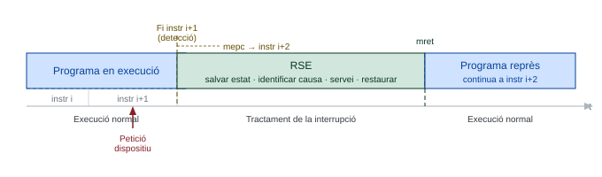
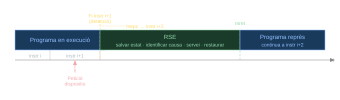
mepc apuntant a la instrucció i+2 i salta a la RSE; en retornar amb mret, el programa es reprèn a partir d’i+2.
9.6.3 Permisos: MIE global i màscares mie
El sistema de permisos d’interrupcions té dos nivells independents:
Permís global
MIE(bit 3 demstatus): habilita o deshabilita totes les interrupcions alhora. El maquinari el posa a 0 automàticament en acceptar qualsevol excepció o interrupció, imretel restaura al valor deMPIE.Màscares individuals
mie: cada bit habilita o deshabilita independentment un tipus d’interrupció. El SO els configura durant la inicialització per indicar quins dispositius poden interrompre el processador.
Perquè una interrupció sigui atesa cal que es compleixin simultàniament les tres condicions de Essencial 9.2:
MIE = 1(permís global habilitat).- El bit corresponent de
mieval 1 (permís específic habilitat). - El bit corresponent de
mipval 1 (petició pendent activa).
Si qualsevol d’aquestes tres condicions no es compleix, la interrupció queda pendent però no s’atén.
9.6.4 Identificació del dispositiu a la RSE
Quan la RSE rep el control per una interrupció (bit 31 de mcause val 1), ha d’identificar quin dispositiu ha fet la petició i si té permís per ser atès:
- Llegir
mcause: el codi de causa indica el tipus d’interrupció (per exemple, codi 11 = interrupció externa en mode M). - Llegir
mip: examinar quins bits de petició estan actius. - Creuar amb
mie: verificar quins d’aquests dispositius tenen el permís habilitat. - Si n’hi ha més d’un, aplicar un criteri de prioritat per decidir quin s’atén primer.
Pot succeir que mentre les interrupcions estaven inhibides (MIE=0) arribin peticions de diversos dispositius. En reprendre’s el permís, tots els bits corresponents de mip estaran actius simultàniament. La RSE ha d’establir un ordre de prioritat per atendre’ls. RISC-V no imposa cap ordre de prioritat per maquinari: és responsabilitat del SO implementar la política que consideri adequada (per exemple, prioritat fixa, round-robin, etc.).
A més, pot succeir que un dispositiu hagi desactivat el senyal de petició abans que la RSE l’atengui (per exemple, per expiració d’un temporitzador intern). En aquest cas, el bit de mip ja no estarà actiu quan la RSE el comprovi, i la petició es perdrà.
9.7 La fallada de pàgina
La fallada de pàgina és l’exemple més complet del mecanisme d’excepcions d’aquest tema: combina la detecció per maquinari, el tractament per programari amb una RSE i la reexecució de la instrucció causant. A més, és el punt de trobada entre els mecanismes d’excepcions i la memòria virtual del Capítol 8.
9.7.1 Del TLB a la fallada de pàgina
Com s’ha vist a Secció 8.5, el TLB (translation-lookaside buffer) és una memòria cau de la taula de pàgines que guarda les traduccions d’adreces virtuals a físiques més recents. Quan la traducció d’una adreça no és al TLB, es produeix una fallada de TLB (TLB miss).
A RISC-V, la fallada de TLB no és una excepció: la resol de manera transparent el hardware page-table walker de la MMU, que recorre la taula de pàgines, copia la PTE al TLB i deixa continuar l’accés sense interrompre el programa (vegeu Aprofundiment 8.4). L’excepció apareix només quan el walker troba que la pàgina no és a la memòria física (bit V = 0 a la PTE): aleshores es genera una fallada de pàgina (page fault), que el sistema operatiu tracta per programari.
A RISC-V, la fallada de TLB la resol el maquinari (page-table walker) de forma transparent. Només la fallada de pàgina (V = 0) és una excepció: la instrucció causant s’avorta, sepc (o mepc) hi apunta, i la RSE l’ha de reexecutar en acabar (sense incrementar sepc). En la reexecució, el walker troba la PTE vàlida i l’accés continua normalment.
El bit V de la PTE que desencadena la fallada és el mateix que s’ha estudiat a Secció 8.5.4. Recordeu que l’especificació RISC-V l’anomena V —no P—, tal com s’explica a Aprofundiment 8.1.
9.7.2 Codi de causa i adreça de la fallada
Una fallada de pàgina escriu a scause (o mcause en mode M) el codi 12, 13 o 15 segons si l’accés era una cerca d’instrucció, una lectura o una escriptura de dada (vegeu RISC-V 9.4). El registre stval (o mtval) conté l’adreça virtual que ha causat la fallada, que la RSE necessita per localitzar la pàgina i la PTE corresponents a la taula de pàgines del procés.
9.7.3 Implementació en mode S
9.7.3.1 Registres CSR de memòria virtual
En un sistema amb Linux, la memòria virtual i les fallades de pàgina es gestionen en mode S. Els registres CSR específics de la traducció d’adreces són els que es mostren a RISC-V 9.14; sepc i scause ja s’han presentat com a equivalents en mode S de mepc i mcause (RISC-V 9.9).
| Registre | Nom complet | Funció |
|---|---|---|
satp |
Supervisor Address Translation and Protection | Mode de traducció i adreça física de la taula de pàgines de primer nivell |
stval |
Supervisor Trap Value | Adreça virtual que ha causat la fallada de pàgina |
El registre satp té el format següent en RV32:
satp
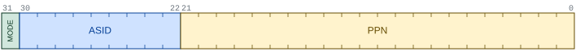
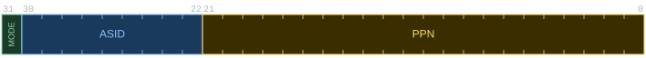
satp en mode SV32.
MODE(bit 31):0= sense traducció d’adreces (bare);1= traducció Sv32 activa.ASID(bits 30:22, Address Space Identifier): identificador de l’espai d’adreces, que permet al TLB distingir traduccions de processos diferents sense haver-lo de buidar en cada canvi de context.PPN(bits 21:0): número de pàgina física (Physical Page Number) de la taula de pàgines de primer nivell.
Quan la RSE en mode S modifica la taula de pàgines en memòria, executa la instrucció sfence.vma per invalidar les entrades del TLB afectades i garantir que el walker torni a llegir la PTE actualitzada.
sfence.vma
| Mnemònic | Operands | Operació | Nom |
|---|---|---|---|
sfence.vma |
rs1, rs2 |
Invalida les entrades del TLB per a l’adreça rs1 i l’ASID rs2 (x0 = totes) |
Supervisor fence |
sfence.vma forma part de l’arquitectura privilegiada de RISC-V: està disponible sempre que el processador implementi el mode S.
9.7.3.2 La rutina de fallada de pàgina
La RSE del nucli, en rebre una fallada de pàgina (codi 12, 13 o 15 a scause), llegeix stval, localitza la PTE corresponent a la taula de pàgines del procés actiu i actua segons el bit V:
RV32IZicsr
page_fault_handler:
csrr t0, stval # t0 = adreça virtual que ha causat la fallada
# Localitzar la PTE de t0 a la taula de pàgines del procés actiu (via satp).
# El SO coneix l'estructura de la seva taula; aquí se n'omet el recorregut.
call locate_pte # t1 = adreça de la PTE de t0
lw t3, 0(t1) # t3 = contingut de la PTE
andi t4, t3, 1 # t4 = bit V
bnez t4, reexecuta # V=1: la pàgina ja és a memòria física
# V=0: portar la pàgina del disc a un marc lliure (o reemplaçar-ne un;
# si el marc víctima té D=1, escriure'l primer al disc).
call load_page_from_disk # actualitza la PTE: V←1, PPN←marc, D←0
reexecuta:
sfence.vma t0, zero # sincronitza el TLB amb la PTE actualitzada
sret # reexecuta la instrucció causant (sepc sense modificar)Quan la pàgina es carrega del disc, la còpia a memòria és idèntica a la del disc, de manera que la PTE s’inicialitza amb D = 0. Si l’adreça de stval no pertany a cap regió vàlida del procés, la rutina avorta el programa (segmentation fault) en lloc de carregar cap pàgina.
9.7.3.3 El bit D en la fallada de pàgina
El bit D (dirty, o bit de modificació) d’una PTE indica si la pàgina s’ha modificat respecte de la còpia al disc. Compleix la mateixa funció que el bit de modificació de les memòries cau d’escriptura retardada (Secció 7.5.1). La seva gestió en la memòria virtual ja s’ha descrit a Secció 8.5.5: el maquinari el posa a 1 en la primera escriptura, simultàniament al TLB i a la PTE.
En el context de la fallada de pàgina, el bit D té dos efectes:
- En carregar una pàgina del disc, la PTE s’inicialitza amb D = 0, ja que la còpia a memòria és idèntica a la del disc.
- En reemplaçar un marc, la RSE consulta el bit D de la pàgina víctima: si D = 1, l’escriu primer al disc; si D = 0, el marc es pot sobreescriure directament (vegeu Secció 8.4).
L’especificació RISC-V permet que el maquinari actualitzi els bits A (accessed) i D de la PTE de forma autònoma (extensió Svadu). Les implementacions que no ho suporten generen una excepció de fallada de pàgina en el primer accés a una pàgina nova —o en la primera escriptura a una pàgina amb D = 0—, i la RSE en mode S actualitza els bits A i D manualment abans de reexecutar la instrucció causant.